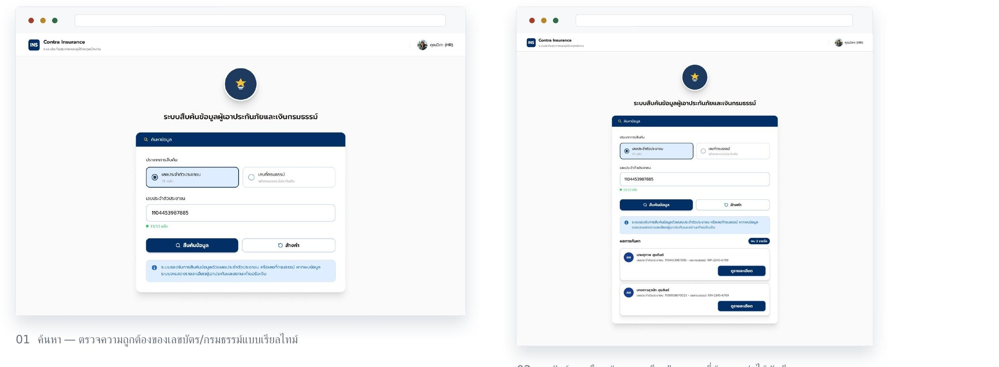
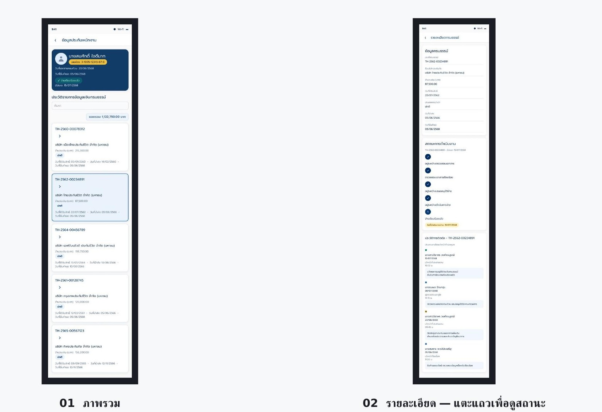

Contra Insurance · UX/UI Case Study
One Click Reveals the Whole Policy Journey
Designed a new policyholder lookup system so HR staff can click and instantly see status and contact history — on both desktop and mobile.
Confidential client work — renamed for portfolio presentation. This is a real client project; the system name and color theme have all been changed, and all customer data and figures have been masked or altered.
01 — Project Overview
An internal HR tool for full policyholder lookup
Contra Insurance is an internal tool for the HR team, used to look up an employee's policyholder information and policy funds — from policy history and disbursement status, to the history of coordination and contact.
02 — Problem & Solution
From a wall of text to a table you can click into
Problem — Old System
Desktop-only. After searching for a policyholder, the system displayed one long, continuous block of data — no way to click into an individual policy, or view its status and contact history separately, so staff had to visually scan the whole page every time.
Solution — New System
Designed a policy table where each row can be selected individually. Clicking a row instantly updates the "processing status" and "contact history" panels to match that policy — and it works on mobile too, for staff away from their desk.
03 — Design Process
From surveying the problem to a system for every device
01
Survey the existing system
Walked the old search flow and result screens to find where staff lost the most time and missed information most often.
02
Design the interaction model
Defined what a single row-click should change on screen, and structured it to use the same logic on both desktop and mobile.
03
Design the full UI
Built out the search, results, and policy-detail screens, with a design system made specifically for the project.
Constraint
Sensitive data, restricted to authorized staff only
The system connects to employees' national ID numbers and financial data, so access is limited to authorized HR staff, and no screen shows more data than it needs to.
04 — Main Screen / Desktop
Search, and see the results instantly

Search — validates the ID/policy number format in real time. Results — pick "View details" on any row to continue right away.
The heart of this project
One row-click changes two panels
Clicking any policy row in the table highlights it, and instantly updates the processing status and contact history on the right to match that exact policy — with no page reload.
05 — Main Screen / Mobile
Same logic, on a smaller screen

Overview, and detail — tap a row to see its status.
06 — Design System
Color, type, and the core components
Aa กก 123
Typography — Prompt. SemiBold/Bold for headings, Regular/Medium for body copy and figures — matching the font used in the real system.
07 — Intended Impact
Designed to help staff work faster
01
Less time scanning data
Replaced one long continuous block of text with a table staff can click into, policy by policy.
02
Same logic on every device
Staff can switch from desktop to mobile without learning a new way to use the system.
03
Full context on one screen
Payment status and contact history always stay tied to whichever policy is selected — no switching between pages.
Interested in working together?
Open to UX/UI design work on systems where the data is complex but the experience still needs to be simple — feel free to reach out.